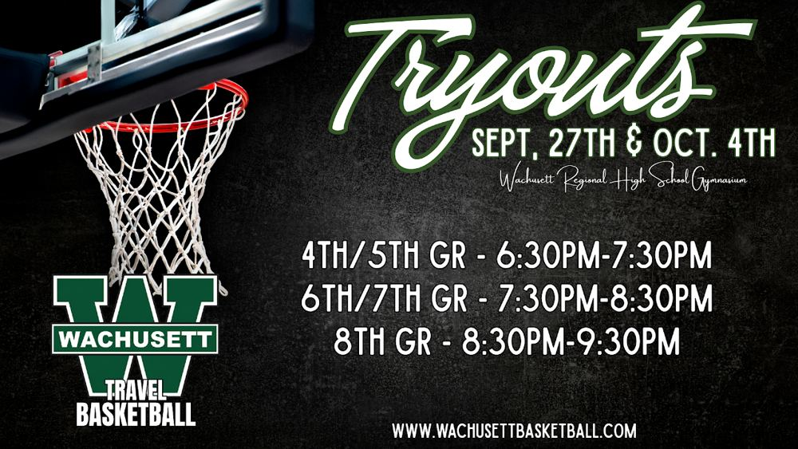

One district. Five towns. One team.
Wachusett Travel Basketball is a private, non-profit program giving kids from Holden, Paxton, Princeton, Rutland and Sterling the chance to play competitive, organized team basketball in the Central Mass Youth Basketball League.
Schedule & Standings
Game times, locations, scores and standings, live from the CMYBL.
Find your teamPractice Calendar
Every team's practice times, kept up to date by our coaches.
See practicesTryouts & Registration
Who can try out, what we look for, and how to register.
Get readyOur Philosophy
How teams are picked, what's expected, and answers to common questions.
Read the FAQTryouts: Sept. 27 & Oct. 4
Both sessions are at the Wachusett Regional High School gym. Grades 4 and 5 run 6:30 to 7:30 PM, grades 6 and 7 run 7:30 to 8:30 PM, and grade 8 runs 8:30 to 9:30 PM. Please register before your child's tryout.
Schedule, Standings & Practices
All Wachusett game schedules, scores and standings are kept by the Central Mass Youth Basketball League. The league site always has the latest times, reschedules and cancellations.
Practice Calendar
Practice times change often, since gym time is limited and coaches sometimes trade slots. Check the Wachusett Travel Basketball practice calendar for your team's latest practices. Games are on the CMYBL site.
Find your team in 4 steps
- Open the CMYBL siteTap Schedule or Standings at the top.
- Pick gender and gradeBoys or Girls, then 4th through 8th.
- Choose Town: WachusettThen select your child's team or division and tap Search.
- Save it as your Favorite TeamNext time, your team's games show up right away.
Weekly game reminders
Anyone can sign up on the CMYBL site for a weekly email of upcoming games. Choose Schedule, find your team, then "Click to Enroll." Players and coaches on a roster with an email on file get reminders automatically.
Home court
All home games are at Wachusett Regional High School, 1401 Main Street, Holden. Away gym addresses are on the CMYBL schedule.
Get directionsReading the schedule
Orange means forfeited, blue means rescheduled, and red means cancelled. Tap a gym name for the address and directions.
Playoffs and Top 25
Playoff brackets and the Top 25 are on the same CMYBL site. Playoffs are usually the first weekend of March.
Ready to try out?
Travel teams are select teams. Interest is high, and not every player who tries out will be placed on a team. Players must try out every season.
Who's eligible
Players who live in or go to school in the Wachusett Regional School District.
Boys and girls teams. One or two teams per grade, depending on interest and resources.
Season fee
$390 per player, per season
Uniforms are not included. Uniforms can be reused each year, so returning players only need a new one if theirs no longer fits.
What to bring
Basketball shoes, water, and a completed registration. Arrive a few minutes early to check in.
Parents: please drop off or take a back seat. Tryouts are less stressful for kids without an audience.
Tryout schedule
Sunday, Sept. 27 and Sunday, Oct. 4 at the Wachusett Regional High School gymnasium.
| Grades | Time |
|---|---|
| 4th & 5th | 6:30 to 7:30 PM |
| 6th & 7th | 7:30 to 8:30 PM |
| 8th | 8:30 to 9:30 PM |

Register for tryouts
Complete the registration form before your child's tryout session. Questions? Reach out on the Contact page.
Teams & Coaches
Our coaches are carefully selected volunteers with basketball experience at the high school or college level. Every coach is CORI'd through the Commonwealth of Massachusetts and receives annual training and feedback from our Board of Directors.
| Team | Head Coach | Assistant(s) | CMYBL Division |
|---|---|---|---|
| 4th Girls | Name | Names | Division |
| 4th Boys | Name | Names | Division |
| 5th Girls | Name | Names | Division |
| 5th Boys | Name | Names | Division |
| 6th Girls | Name | Names | Division |
| 6th Boys | Name | Names | Division |
| 7th Girls | Name | Names | Division |
| 7th Boys | Name | Names | Division |
| 8th Girls | Name | Names | Division |
| 8th Boys | Name | Names | Division |
Interested in coaching?
Coaches are selected each fall at our coaches meeting, which covers season expectations and tryout evaluation assignments. Final coaching assignments are made once teams are set. Please bring a completed Massachusetts CORI form and a photocopy of your driver's license to the meeting.
Camps & Clinics
Skill camps and clinics are a great way to get ready for tryouts, sharpen fundamentals in the off-season, or try basketball for the first time. Listings are added as dates are confirmed.
Run a camp or clinic in the district?
We're happy to share programs that serve Wachusett players. Send the details through the Contact page.
AAU & Rec Basketball
Travel basketball is our winter competitive program. Here's how it fits with other options in the area, so every Wachusett kid can find the right place to play.
| Rec League | Travel (us) | AAU | |
|---|---|---|---|
| Who | Everyone who signs up | Selected by tryout, grades 4 to 8 | Selected by club tryout |
| When | Season | December to early March | Spring and summer |
| Commitment | Lower | 2 practices a week, Sunday games | Higher, with weekend tournaments and travel |
| Run by | Town or local rec program | Wachusett Travel Basketball, in the CMYBL | Independent private clubs |
Rec basketball
A great fit for new players, younger kids, and anyone who wants to play for fun. Many travel players got their start in rec.
- Holden: Program and link
- Paxton: Program and link
- Princeton: Program and link
- Rutland: Program and link
- Sterling: Program and link
AAU basketball
AAU clubs play in the spring and summer and are separate from Wachusett Travel Basketball. Each club runs its own tryouts, fees and schedule. Making or not making a travel team has no effect on AAU, and AAU doesn't guarantee a travel roster spot.
- Club name and link
- Club name and link
Listing a club here is for information only and is not an endorsement.
Game day in Wachusett
Team photos, game action and tournament moments. Families can share photos with the board to be added.
Sample tiles show the layout. Your photos replace them.
Our Philosophy
Wachusett Travel Basketball operates as a private, non-profit organization that manages the winter competitive basketball experience for boys and girls in grades 4 through 8 who live in or attend school in the Wachusett Regional School District. We give the kids of Wachusett the chance to play competitive team basketball in an organized league through the Central Mass Youth Basketball League (CMYBL).
Demand to play is typically greater than the number of roster spots. Limited gym space, CMYBL rules and the competitive nature of the program make travel teams "select," a practice we share with virtually every other town in the league. Please understand before registering that not every player who tries out will be selected.
What we look for at tryouts
Travel teams are for kids dedicated to becoming better basketball players this winter. Evaluators focus on four attributes.
Athleticism
Basketball is fast-paced and physically demanding. Good conditioning and the potential to be an above-average athlete are ranked very high at every grade.
Skill
We're a teaching program, but beyond grade 5 the focus shifts from introducing skills to refining them. Older players should know the rules and basic offensive and defensive strategy.
Attitude
From winter availability to hustle at tryouts, we expect every player to show a positive attitude in tryouts and in league play.
Coachability
Listens to instruction and applies it, accepts feedback with good body language, and shows respect for players, coaches and referees.
Frequently asked questions
Who is eligible to try out?
- Players must live in or go to school in the Wachusett Regional School District.
- Players must be in grades 4 through 8.
How are teams selected?
Grades 4 and 5: We make every attempt to build rosters that support both individual and team development. Our goal is two equal teams, in line with the CMYBL structure of minimal division between talent levels. Players must try out every season, and past participation does not guarantee a spot. Returning players shouldn't expect the same roster or coach each year, though in general most returning players end up on a team fairly similar to last season's.
Grades 6, 7 and 8: Selection is much more talent focused. Teams are divided into divisions, and we aim to pick the roster best able to compete in highly competitive games.
Most teams use independent evaluators (people who are not coaching and have no children in that division) who observe and sometimes run tryouts, then work with the head coaches on roster selection.
My child wasn't selected. Can we get feedback?
Yes. We're happy to share where your child can improve so they can try out again in future seasons. Once teams are finalized, we ask that you respect the rosters.
Team assignments are decided by coaches, directors and evaluators only. Given the complications that can arise, we do not discuss specific player rankings or why rosters were made the way they were. Final decisions rest with the directors, coaches and those they appoint.
How much does it cost?
The season fee is $390 per player. Uniforms are not included and are purchased separately if needed. Players can reuse their uniform each year, so returning players only need a new one if theirs no longer fits.
Who will coach my child?
Our coaches are carefully selected men and women with significant basketball experience at the high school or college level. All are CORI'd through the Commonwealth of Massachusetts and receive annual training, individual feedback and updates from our Board of Directors.
Coaches, and occasionally directors, will talk with parents about their child's progress during the season. If you have an issue your child's coach isn't addressing, please feel free to contact any member of the Board.
How many players make each team?
Roster size varies, but our teams have historically carried 10 to 11 players. Depending on talent, resources and interest, we support one or two teams at each grade.
Why don't you take more kids?
Wachusett already supports more teams per age group than most CMYBL programs. We're a teaching program, but playing to win is a main goal of a competitive team. Our mission is to balance the number of players we accept with a strong season that best prepares kids for high school basketball.
Why are there more boys teams than girls teams?
The trend has started to shift in recent years, but more boys than girls still try out. We build teams based on the number of players who try out.
What's the parent's role during tryouts?
Beyond supporting your child, we strongly recommend parents take a back seat. Kids usually find tryouts more stressful with parents watching, so consider dropping off. If you do stay, please don't interfere in any way.
During tryouts, please don't ask coaches how your child is doing or how many players they plan to keep.
Can my child play another winter sport too?
Most travel players play only basketball in the winter, though a few families make two sports work. Practice schedules vary by team, and a coach can't build a team's schedule around one player's other activity. If your child has indoor soccer a couple of evenings a week or hockey every Sunday, travel basketball probably won't fit.
Some coaches, especially in the upper grades, may choose a player who is committing to basketball over one balancing another scheduled sport. Players who miss a substantial number of practices or games may be replaced by a player who can fully commit.
What's the practice schedule?
Players are expected to attend all scheduled practices, arriving on time and staying until the end. Teams generally practice twice a week from when teams are made through December, then once or twice a week in January and February. Some coaches may skip a week or practice three times, and coaches often trade practice times.
Gym time in Wachusett is limited, so please plan for some flexibility this winter.
When and where are games?
League games are Sunday afternoons, starting between 12:00 and 5:00 depending on each town's gym. Games run every Sunday from early December to late February, except during school vacation weeks. There is a game on Martin Luther King Day weekend.
Most Wachusett teams play in the CMYBL, led by commissioner Josh Hammer. Most opponents are within about 45 minutes, and most under 30. Expect 30 to 50 percent of games at home, with the rest at opponents' gyms or the occasional neutral site. The full league schedule is published about 10 days before the season starts.
Playoffs are usually the first weekend of March and may include Saturday games. Teams may also play in 2 or 3 tournaments and some non-league games at the coach's discretion.
What are the gym rules?
Sneakers only on the court, clean up the bleachers, and keep siblings off the floor between games. Gym time is a privilege we share across five towns.
A big commitment, and a lot of fun
Travel basketball is a large winter commitment. If you're new to the program, we encourage you to talk with other Wachusett families about what to expect.
Get in touch
Questions about tryouts, registration, coaching or sponsorship? Send us a note and a board member will get back to you.
Board of Directors
- Adam Deluca
- Tom Sullivan
- Mike Leahy
- Jay Blackburn
- Tim Yurkus
- Sabrina Heiniluoma
Thank you to our sponsors
Local businesses help keep travel basketball affordable for Wachusett families.